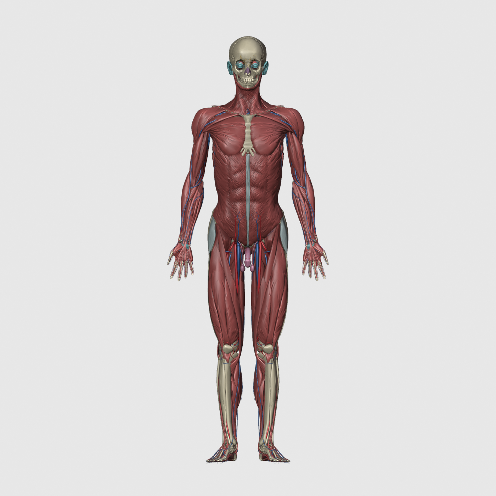

PCr ⇄ ATP
Orkuflutningur styður meðal annars jónadælur sem viðhalda spennumun yfir frumuhimnur.
FRÁ SAMEIND TIL HREYFINGAR
Veldu skammt og tíma.
Kannaðu kreatín í líkama og heila.

LÍKAMINN / YFIRLIT
FERÐALAGIÐ ÞITT
Upphleðsla → aðlögunFerlar, ekki persónuleg spá. Sýningin gerir ráð fyrir heilbrigðum fullorðnum. Áhrif ráðast m.a. af grunnbirgðum, þjálfun og mataræði. Ekki er hægt að reikna nákvæman vöðvavöxt eða heilastarfsemi út frá skammti og tíma einum.
SKOÐAÐU FERLIÐ NÁNAR
Kreatín er hluti af orkukerfi líkamans. Viðbót getur aukið birgðir í vöðvum og hjálpað þeim að mæta snöggri orkuþörf.
Við snögga áreynslu gefur fosfókreatín fosfathóp til ADP. ATP endurmyndast hratt. Í hvíld endurhlaða hvatberar kerfið.
HEILINN / ÖNNUR MYND
Heilinn myndar eigið kreatín og tekur einnig upp kreatín með flutningspróteinum. Blóð–heilaþröskuldurinn takmarkar flutning. Vöðvamettun segir því ekki til um mettun heilans.
Orkuflutningur styður meðal annars jónadælur sem viðhalda spennumun yfir frumuhimnur.
Niðurstöður eru blandaðar. Jákvæðar niðurstöður við svefnskort jafngilda ekki sönnun fyrir daglegri bætingu hjá úthvíldum.